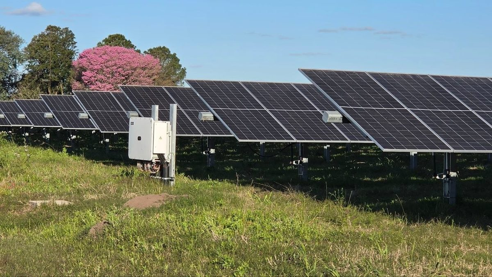

아르헨티나 헤네랄 마다리아가 전력협동조합, 조합원 만장일치로 1MW 태양광 단지 짓기로

패널 1,620장으로 도시 낮 시간 전력 소비의 20% 충당 추정…나머지 80%는 계속 사 오고, 아낀 구입비는 모두 서비스 투자에…시 소유 부지 협의 진척
아르헨티나 부에노스아이레스주 헤네랄 마다리아가의 전력협동조합 COEMA(Cooperativa Eléctrica de General Madariaga)가 최근 조합 본부에서 연 정기 총회에서 1MW 규모 태양광 단지를 짓는 사업을 조합원 만장일치로 승인했다. 계획대로라면 태양광 패널 1,620장이 1~1.5헥타르에 들어서며, 조합은 앞으로 설비를 늘릴 자리까지 생각해 최소 3헥타르의 부지를 찾고 있다. 조합이 총회에 내놓은 추정으로는 이 단지가 도시 낮 시간 전력 소비의 20%를 맡고 나머지 80%는 지금처럼 배전회사에서 사 오게 되며, 전기 구입에 덜 쓰게 되는 돈은 모두 서비스 개선을 위한 새 투자에 돌린다는 구상이다. 부지는 시 소유 땅에 설치하는 방향으로 시와 상당히 협의가 진척됐고, 공사를 맡을 업체 기술진이 그 땅을 이미 살펴봤다. 조합 지배인 카를로스 다게레(Carlos Daguerre)는 지역 라디오 CNM Radio 인터뷰에서 "조합원 앞에 놓인 안건 때문에 여느 때와 다른 총회였다"고 말하고, 많은 질문에 기술 사양과 비용·재원 자료로 답했다며 만장일치는 지지이면서 집행부의 책임이라고 했다. 이번 결정으로 COEMA는 주 안에서 자체 재생에너지 발전에 나서는 첫 협동조합 가운데 하나가 되며, 조합은 부지 선정 등 공사에 필요한 절차를 밟고 있다.
시민에너지 관점
1MW, 패널 1,620장은 도시 낮 전기의 20%에 그치는 작은 설비지만, 사 오기만 하던 전기의 일부를 조합원이 함께 가진 설비에서 만들겠다는 결정을 조합원 총회가 만장일치로 내렸다는 데 무게가 있다. 시민이 소유한 발전소는 규모가 작아 지역 전력에 별 의미가 없다는 우려가 있지만, 이 조합은 처음부터 필요한 땅의 두 배가 넘는 최소 3헥타르를 찾으며 나머지 80%를 차츰 줄여 갈 자리를 남겨 두고 있다. 시는 땅을 내놓고 조합원은 사업을 함께 결정하는 구조에서는 공공부지에서 나오는 이익이 외부 사업자가 아니라 그 전기를 쓰는 주민에게 돌아간다. 국내에서도 지자체가 유휴 공공부지를 주민 협동조합이 먼저 쓸 수 있게 열고, 확장할 여지까지 담은 장기 이용 계약을 마련해야 한다.
출처: El Mensajero de la Costa 2026-10-30 Redacción(기자 미표기) 원문 보기
アルゼンチン・ヘネラル・マダリアガの電力協同組合、組合員の全会一致で1MW太陽光発電所の建設へ
パネル1,620枚で市の日中電力消費の20%を賄う見込み…残る80%は引き続き購入し、浮いた購入費はすべてサービス投資に…市有地での設置協議が進展
アルゼンチン・ブエノスアイレス州ヘネラル・マダリアガの電力協同組合COEMA（Cooperativa Eléctrica de General Madariaga）は、このほど組合本部で開いた通常総会で、出力1MWの太陽光発電所を建設する事業を組合員の全会一致で承認した。計画では太陽光パネル1,620枚を1～1.5ヘクタールに設置し、組合は将来の増設も見込んで少なくとも3ヘクタールの用地を探している。組合が総会で示した見込みでは、この発電所が市の日中の電力消費の20%を担い、残る80%はこれまでどおり配電会社から購入することになり、電力購入に充てずに済む分はすべてサービス改善のための新たな投資に回す考えだ。用地は市有地に設置する方向で市との協議がかなり進んでおり、工事を担う業者の技術者がすでにその土地を調べている。組合の支配人カルロス・ダゲレ（Carlos Daguerre）氏は地元ラジオCNM Radioのインタビューで「組合員に諮った案件のために、いつもとは違う総会だった」と述べ、多くの質問に技術仕様や費用・資金の資料で答えたとしたうえで、全会一致は支持であると同時に執行部の責任でもあると語った。今回の決定でCOEMAは州内で自前の再生可能エネルギー発電に乗り出す最初の協同組合の一つとなり、組合は用地選定など工事に必要な手続きを進めている。
市民エネルギーの視点
1MW、パネル1,620枚は市の日中電力の20%にとどまる小さな設備だが、買うだけだった電気の一部を組合員が共に持つ設備でつくるという決定を、組合員総会が全会一致で下したことに重みがある。市民が所有する発電所は規模が小さく地域の電力にはあまり意味がないという懸念もあるが、この組合は最初から必要な土地の2倍を超える少なくとも3ヘクタールを探し、残る80%を少しずつ減らしていく余地を残している。市が土地を出し、組合員が事業を共に決める仕組みでは、公有地から生まれる利益が外部の事業者ではなく、その電気を使う住民に戻る。韓国でも自治体が遊休公有地を住民協同組合が優先して使えるように開き、増設の余地まで盛り込んだ長期利用契約を整えるべきだ。
出典: El Mensajero de la Costa（エル・メンサヘロ・デ・ラ・コスタ） 2026-10-30 編集部（記者名なし） 原文を読む
阿根廷赫内拉尔马达里亚加电力合作社经社员一致同意，将建设1MW光伏电站
以1,620块组件预计满足全市白天用电的20%…其余80%继续外购，省下的购电费全部用于服务投资…在市有土地上建设的磋商取得进展
阿根廷布宜诺斯艾利斯省赫内拉尔马达里亚加的电力合作社COEMA（Cooperativa Eléctrica de General Madariaga）近日在合作社总部召开定期社员大会，社员一致通过了建设1MW光伏电站的项目。按照计划，1,620块太阳能组件将安装在1至1.5公顷的土地上，合作社还考虑到今后扩建的需要，正在寻找至少3公顷的用地。根据合作社在大会上提出的估算，这座电站将承担全市白天用电量的20%，其余80%仍像现在一样向配电公司购买，购电方面省下的资金将全部投入改善服务的新投资。选址方面，合作社与市政府就在市有土地上建设的磋商已取得相当进展，负责施工的企业技术人员已经实地查看过该地块。合作社经理卡洛斯·达格雷（Carlos Daguerre）在接受当地电台CNM Radio采访时说，“由于提交给社员审议的议题，这是一次与往常不同的大会”，并表示针对社员的大量提问，合作社用技术规格及成本、资金方面的资料作了解答，一致通过既是支持，也是管理层的责任。通过这一决定，COEMA成为该省最早自主开展可再生能源发电的合作社之一，目前合作社正在推进选址等施工所需的程序。
市民能源视角
1MW、1,620块组件只能满足全市白天用电的20%，规模不大，但其分量在于：由社员大会一致决定，把原本全部外购的电力中的一部分，改由社员共同拥有的设施来生产。有人担心公民所有的电站规模小，对地方电力意义不大，但这家合作社从一开始就寻找超过所需面积两倍的至少3公顷土地，为逐步减少其余80%的外购电留出了空间。在市政府提供土地、社员共同决定项目的结构中，公有土地产生的收益不会流向外部企业，而是回到使用这些电力的居民手中。韩国也应由地方政府开放闲置公有土地供居民合作社优先使用，并制定包含扩建余地的长期使用合同。
来源: El Mensajero de la Costa（阿根廷《海岸信使报》） 2026-10-30 编辑部（未署名） 查看原文
Argentine electricity cooperative in General Madariaga votes unanimously to build a 1MW solar park
1,620 panels expected to cover 20% of the town's daytime power use; the other 80% will still be bought in, and all savings on purchases will go into service investment; talks on municipal land well advanced
COEMA (Cooperativa Eléctrica de General Madariaga), the electricity cooperative of General Madariaga in Argentina's Buenos Aires province, has won unanimous approval from its members to build a 1MW solar park at a recent ordinary general assembly held at its headquarters. Under the plan, 1,620 solar panels would be installed on 1 to 1.5 hectares, and the cooperative is looking for a site of at least three hectares to leave room for future expansion. According to estimates presented to the assembly, the park would cover 20% of the town's daytime electricity consumption while the remaining 80% would still be bought from the distributor as it is today, and all the money no longer spent on purchases would be put into new investment to improve the service. Talks with the municipality on placing the park on municipal land are well advanced, and engineers from the company that will carry out the works have already assessed the plot. Speaking to local radio station CNM Radio, the cooperative's manager Carlos Daguerre said "it was a different assembly because of everything put before the members," adding that the many questions were answered with technical specifications and data on costs and financing, and that the unanimous vote is both a show of support and a responsibility for the cooperative's management. The decision puts COEMA among the first cooperatives in the province to take up its own renewable generation, and it is now working through the steps needed for construction, including choosing the site.
Citizen Energy View
At 1MW and 1,620 panels the park is small and would meet only 20% of the town's daytime power, but what matters is that a members' assembly decided unanimously to produce part of the electricity it used to buy entirely from outside in a facility the members own together. Some worry that citizen-owned plants are too small to matter for local supply, yet this cooperative is seeking at least three hectares from the start, more than twice the land it needs, leaving room to chip away at the remaining 80%. When the municipality provides the land and members decide on the project together, the returns from public land flow not to an outside developer but to the residents who use the power. Korea should open idle public land to residents' cooperatives on a priority basis and offer long-term lease contracts that leave room for expansion.
Source: El Mensajero de la Costa 2026-10-30 Newsroom (no byline) Read the original